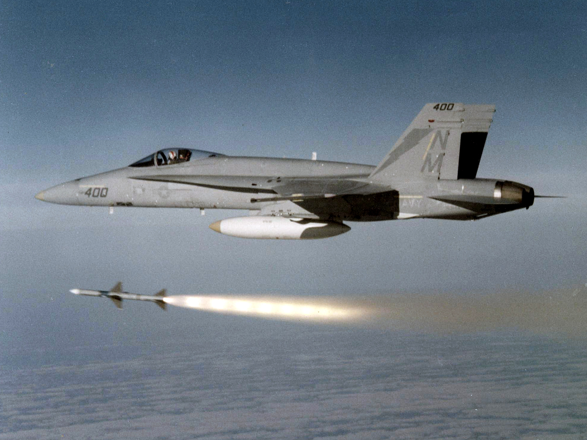
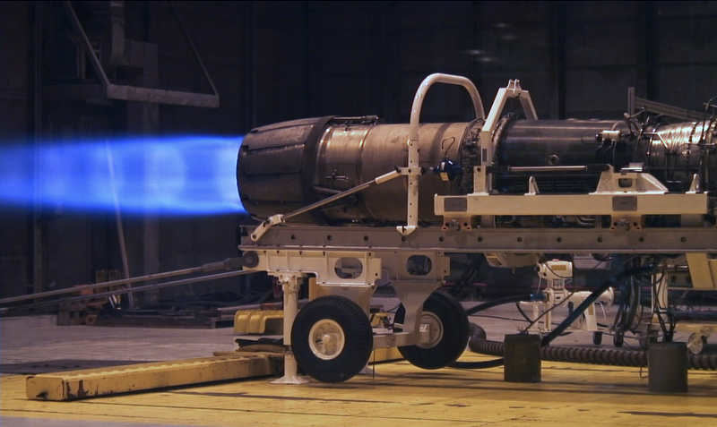
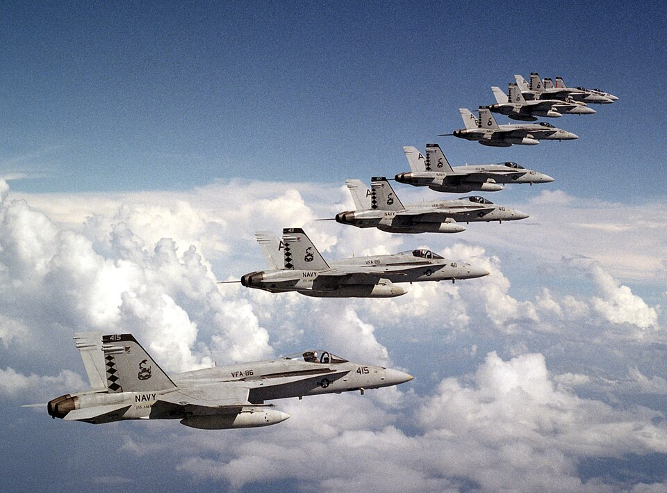

The F/A-18 Hornet is one of the most versatile multirole fighter jets in modern naval aviation—and its story begins with McDonnell Douglas Corporation, the aerospace powerhouse that brought it to life.

Formed in 1967 through the merger of McDonnell Aircraft and Douglas Aircraft, McDonnell Douglas was a leading American aerospace manufacturer and defense contractor based near St. Louis, Missouri. While Douglas was famous for pioneering commercial airliners like the DC-3 and DC-10, McDonnell built a reputation for dominating military aviation with legendary jets such as the F-4 Phantom II and the F-15 Eagle.
In the 1970s, the U.S. Navy and Marine Corps needed a single aircraft capable of handling both air-to-air combat and ground-attack missions. Partnering with Northrop, McDonnell Douglas adapted the YF-17 prototype into the F/A-18 Hornet—the first U.S. tactical jet specifically designed from the ground up as a true strike fighter.
Entering operational service in the early 1980s, the F/A-18 quickly became the backbone of carrier air wings thanks to its reliability, twin-engine survivability, and advanced avionics. McDonnell Douglas later developed the larger, more capable F/A-18E/F Super Hornet in the 1990s before merging with Boeing in 1997—ensuring the Hornet family remains a cornerstone of global naval defense today.

The F/A-18 Hornet is a highly maneuverable, twin-engine multimission tactical aircraft capable of reaching Mach 1.8. Its aerodynamic design—featuring trapezoidal wings, leading-edge extensions, canted vertical stabilizers, and specialized flaps—works alongside a digital fly-by-wire system to maintain exceptional control at high angles of attack. This extreme flight capability was famously tested and pushed to 65–70 degrees in NASA's High Alpha Research Vehicle program. Inside the cockpit, the Hornet pioneered the use of multifunction displays, a digital avionics bus, and Hands-On Throttle-and-Stick (HOTAS) controls, enabling pilots to manage weapons, radar, and flight systems while switching seamlessly between fighter and attack roles at the push of a button.
Beyond its flight and combat agility, the Hornet was engineered for high reliability and minimal downtime compared to heavier aircraft like the F-14 Tomcat and A-6 Intruder. It achieves three times the mean time between failures of other Navy strike aircraft while requiring only half the maintenance. This efficiency is largely driven by its stall-resistant General Electric F404 engines, which prioritize durability and connect to the airframe at just 10 points—allowing a four-person crew to remove an engine in 20 minutes without specialized equipment.

The Hornet entered operational service with the U.S. Marine Corps squadron VMFA-314 on January 7, 1983, and with U.S. Navy squadrons VFA-25 and VFA-113 on July 1, 1984, replacing aging F-4 Phantoms and A-7 Corsairs. It debuted in combat in 1986 over Libya, saw heavy action in the 1991 Gulf War and later Middle East conflicts, and gradually transitioned out of front-line Navy carrier service in favor of the F/A-18E/F Super Hornet and F-35C.
Over four decades of front-line service, the F/A-18 Hornet proved that a single aircraft could master both air superiority and precision strike missions from the deck of an aircraft carrier. Its blend of digital avionics, rugged twin-engine reliability, and multirole flexibility set the standard for modern naval aviation—securing McDonnell Douglas and the Hornet family a permanent place in military aviation history.
Explore these resources to learn more about the F/A-18 Hornet, its development, and its operational history.